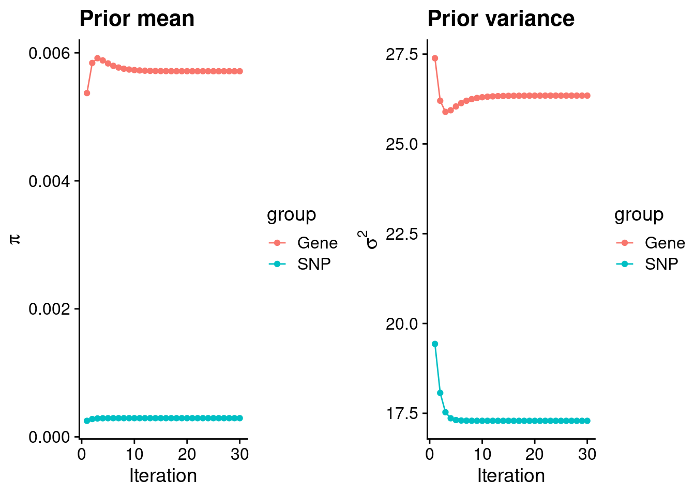
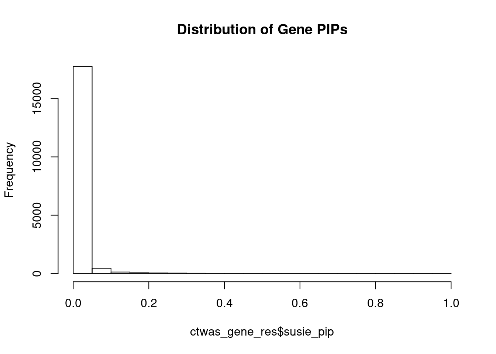
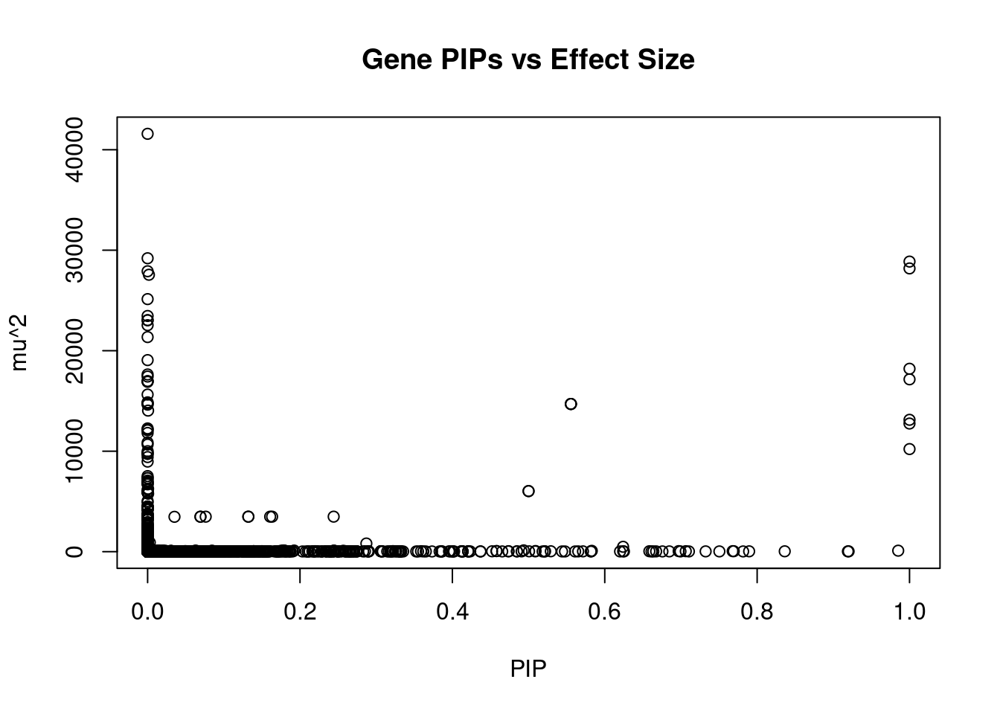
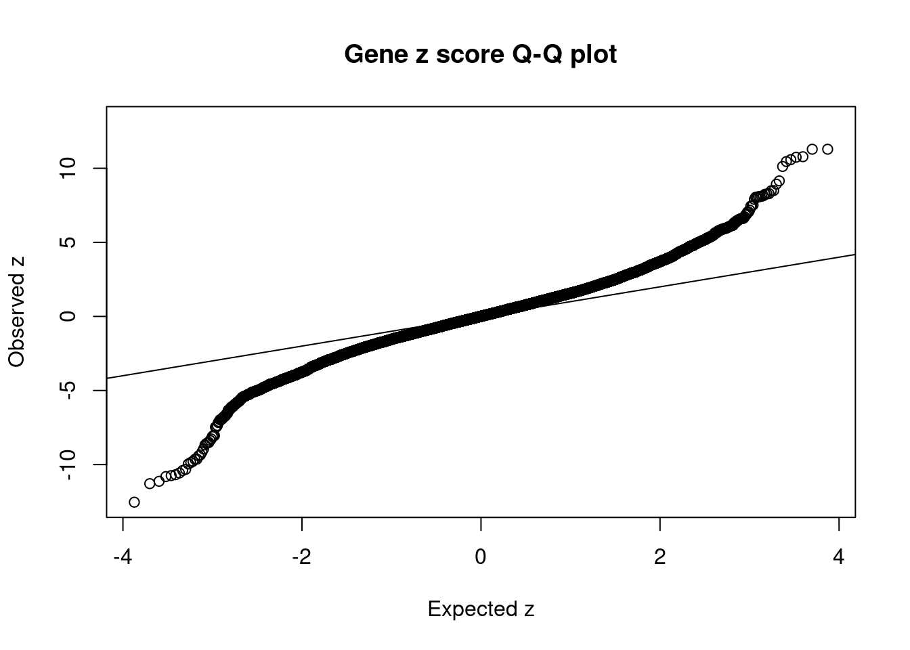
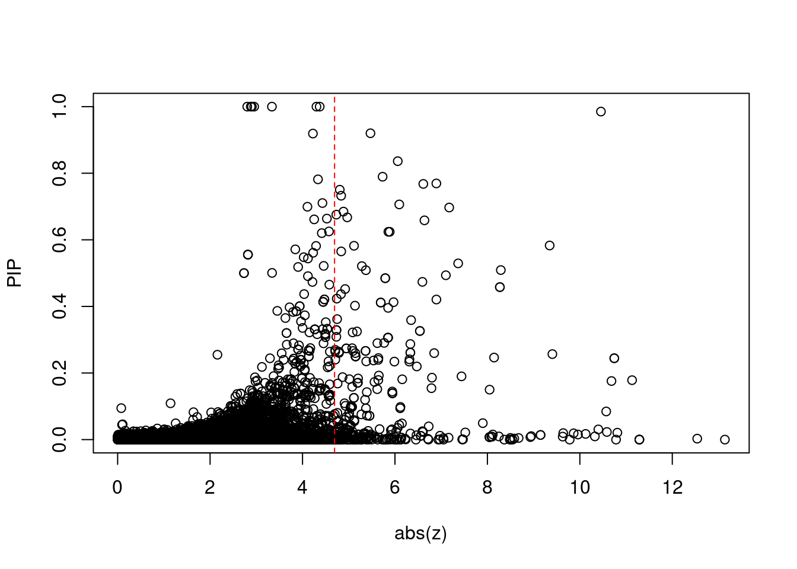
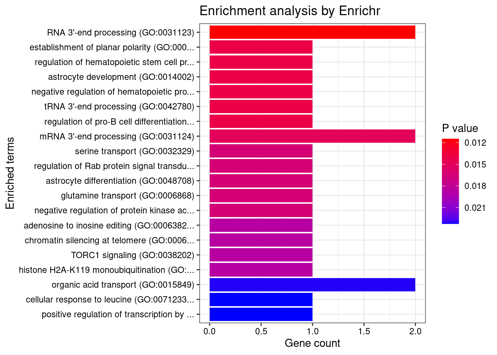
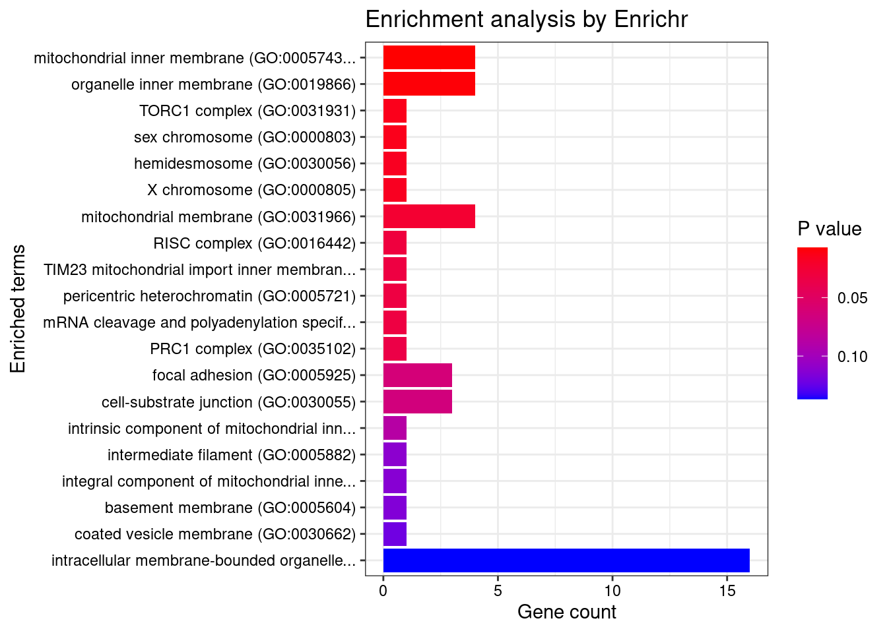
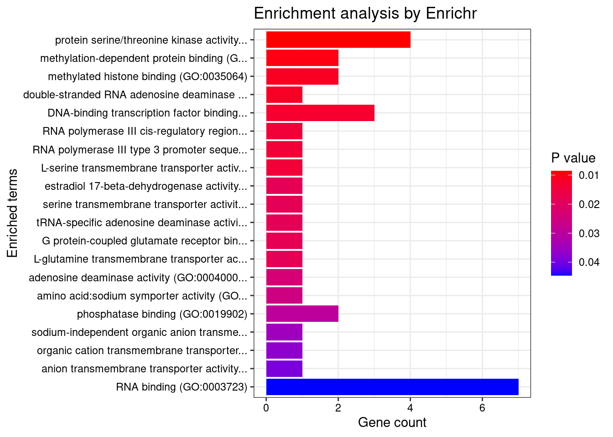
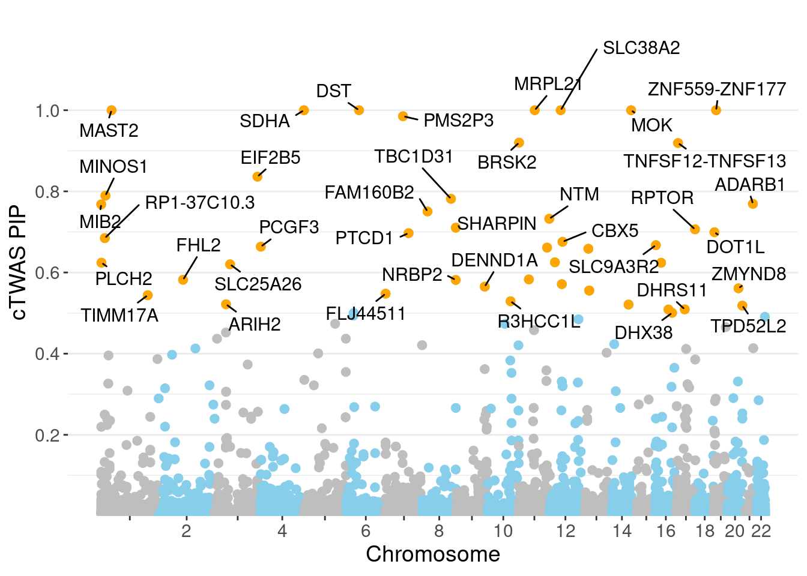
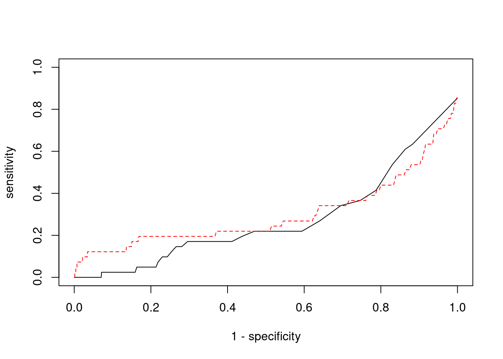

Last updated: 2022-02-22
Checks: 6 1
Knit directory: cTWAS_analysis/
This reproducible R Markdown analysis was created with workflowr (version 1.6.2). The Checks tab describes the reproducibility checks that were applied when the results were created. The Past versions tab lists the development history.
Great! Since the R Markdown file has been committed to the Git repository, you know the exact version of the code that produced these results.
Great job! The global environment was empty. Objects defined in the global environment can affect the analysis in your R Markdown file in unknown ways. For reproduciblity it’s best to always run the code in an empty environment.
The command set.seed(20211220) was run prior to running the code in the R Markdown file. Setting a seed ensures that any results that rely on randomness, e.g. subsampling or permutations, are reproducible.
Great job! Recording the operating system, R version, and package versions is critical for reproducibility.
Nice! There were no cached chunks for this analysis, so you can be confident that you successfully produced the results during this run.
Using absolute paths to the files within your workflowr project makes it difficult for you and others to run your code on a different machine. Change the absolute path(s) below to the suggested relative path(s) to make your code more reproducible.
| absolute | relative |
|---|---|
| /project2/xinhe/shengqian/cTWAS/cTWAS_analysis/data/ | data |
| /project2/xinhe/shengqian/cTWAS/cTWAS_analysis/code/ctwas_config.R | code/ctwas_config.R |
Great! You are using Git for version control. Tracking code development and connecting the code version to the results is critical for reproducibility.
The results in this page were generated with repository version 1058990. See the Past versions tab to see a history of the changes made to the R Markdown and HTML files.
Note that you need to be careful to ensure that all relevant files for the analysis have been committed to Git prior to generating the results (you can use wflow_publish or wflow_git_commit). workflowr only checks the R Markdown file, but you know if there are other scripts or data files that it depends on. Below is the status of the Git repository when the results were generated:
Ignored files:
Ignored: .ipynb_checkpoints/
Untracked files:
Untracked: Rplot.png
Untracked: analysis/.ipynb_checkpoints/
Untracked: analysis/Glucose_Adipose_Subcutaneous.Rmd
Untracked: analysis/Glucose_Adipose_Visceral_Omentum.Rmd
Untracked: analysis/Splicing_Test.Rmd
Untracked: code/.ipynb_checkpoints/
Untracked: code/AF_out/
Untracked: code/BMI_S_out/
Untracked: code/BMI_out/
Untracked: code/Glucose_out/
Untracked: code/LDL_S_out/
Untracked: code/T2D_out/
Untracked: code/ctwas_config.R
Untracked: code/mapping.R
Untracked: code/out/
Untracked: code/run_AF_analysis.sbatch
Untracked: code/run_AF_analysis.sh
Untracked: code/run_AF_ctwas_rss_LDR.R
Untracked: code/run_BMI_analysis.sbatch
Untracked: code/run_BMI_analysis.sh
Untracked: code/run_BMI_analysis_S.sbatch
Untracked: code/run_BMI_analysis_S.sh
Untracked: code/run_BMI_ctwas_rss_LDR.R
Untracked: code/run_BMI_ctwas_rss_LDR_S.R
Untracked: code/run_Glucose_analysis.sbatch
Untracked: code/run_Glucose_analysis.sh
Untracked: code/run_Glucose_ctwas_rss_LDR.R
Untracked: code/run_LDL_analysis_S.sbatch
Untracked: code/run_LDL_analysis_S.sh
Untracked: code/run_LDL_ctwas_rss_LDR_S.R
Untracked: code/run_T2D_analysis.sbatch
Untracked: code/run_T2D_analysis.sh
Untracked: code/run_T2D_ctwas_rss_LDR.R
Untracked: data/.ipynb_checkpoints/
Untracked: data/AF/
Untracked: data/BMI/
Untracked: data/BMI_S/
Untracked: data/Glucose/
Untracked: data/LDL_S/
Untracked: data/T2D/
Untracked: data/TEST/
Untracked: data/UKBB/
Untracked: data/UKBB_SNPs_Info.text
Untracked: data/gene_OMIM.txt
Untracked: data/gene_pip_0.8.txt
Untracked: data/mashr_Heart_Atrial_Appendage.db
Untracked: data/mashr_sqtl/
Untracked: data/summary_known_genes_annotations.xlsx
Untracked: data/untitled.txt
Unstaged changes:
Modified: analysis/BMI_Brain_Cortex.Rmd
Modified: analysis/LDL_Liver_S.Rmd
Modified: analysis/index.Rmd
Note that any generated files, e.g. HTML, png, CSS, etc., are not included in this status report because it is ok for generated content to have uncommitted changes.
These are the previous versions of the repository in which changes were made to the R Markdown (analysis/BMI_Brain_Amygdala_S.Rmd) and HTML (docs/BMI_Brain_Amygdala_S.html) files. If you’ve configured a remote Git repository (see ?wflow_git_remote), click on the hyperlinks in the table below to view the files as they were in that past version.
| File | Version | Author | Date | Message |
|---|---|---|---|---|
| Rmd | 1058990 | sq-96 | 2022-02-22 | update |
#number of imputed weights
nrow(qclist_all)[1] 18585#number of imputed weights by chromosome
table(qclist_all$chr)
1 2 3 4 5 6 7 8 9 10 11 12 13 14 15 16
1767 1246 1031 704 763 970 1076 667 724 846 1084 936 356 661 609 865
17 18 19 20 21 22
1252 230 1355 624 247 572 #number of imputed weights without missing variants
sum(qclist_all$nmiss==0)[1] 17196#proportion of imputed weights without missing variants
mean(qclist_all$nmiss==0)[1] 0.9253#add z scores to results
load(paste0(results_dir, "/", analysis_id, "_expr_z_gene.Rd"))
ctwas_gene_res$z <- z_gene[ctwas_gene_res$intron_id,]$z
z_snp <- z_snp[z_snp$id %in% ctwas_snp_res$id,]
ctwas_snp_res$z <- z_snp$z[match(ctwas_snp_res$id, z_snp$id)]
#merge gene and snp results with added information
ctwas_snp_res$genename=NA
ctwas_snp_res$gene_type=NA
ctwas_snp_res$intron_id=NA
ctwas_res <- rbind(ctwas_gene_res,
ctwas_snp_res[,colnames(ctwas_gene_res)])
#get number of eQTL for geens
num_eqtl <- c()
for (i in 1:22){
load(paste0(results_dir, "/", analysis_id, "_expr_chr", i, ".exprqc.Rd"))
num_eqtl <- c(num_eqtl, unlist(lapply(wgtlist, nrow)))
}
ctwas_gene_res$num_eqtl <- num_eqtl[ctwas_gene_res$intron_id]
#store columns to report
report_cols <- colnames(ctwas_gene_res)[!(colnames(ctwas_gene_res) %in% c("type", "region_tag1", "region_tag2", "cs_index", "gene_type", "z_flag", "id", "chrom", "pos"))]
first_cols <- c("genename", "region_tag")
report_cols <- c(first_cols, report_cols[!(report_cols %in% first_cols)])
report_cols_snps <- c("id", report_cols[-1])
report_cols_snps <- report_cols_snps[!(report_cols_snps %in% "num_eqtl")]
#get number of SNPs from s1 results; adjust for thin argument
ctwas_res_s1 <- data.table::fread(paste0(results_dir, "/", analysis_id, "_ctwas.s1.susieIrss.txt"))
n_snps <- sum(ctwas_res_s1$type=="SNP")/thin
rm(ctwas_res_s1)
#estimated group prior
estimated_group_prior <- group_prior_rec[,ncol(group_prior_rec)]
names(estimated_group_prior) <- c("gene", "snp")
estimated_group_prior["snp"] <- estimated_group_prior["snp"]*thin #adjust parameter to account for thin argument
print(estimated_group_prior) gene snp
0.005713 0.000292 #estimated group prior variance
estimated_group_prior_var <- group_prior_var_rec[,ncol(group_prior_var_rec)]
names(estimated_group_prior_var) <- c("gene", "snp")
print(estimated_group_prior_var) gene snp
26.34 17.29 #report sample size
print(sample_size)[1] 336107#report group size
group_size <- c(nrow(ctwas_gene_res), n_snps)
print(group_size)[1] 18585 7535010#estimated group PVE
estimated_group_pve <- estimated_group_prior_var*estimated_group_prior*group_size/sample_size #check PVE calculation
names(estimated_group_pve) <- c("gene", "snp")
print(estimated_group_pve) gene snp
0.008322 0.113177 #compare sum(PIP*mu2/sample_size) with above PVE calculation
c(sum(ctwas_gene_res$PVE),sum(ctwas_snp_res$PVE))[1] 0.5046 15.5637
genename region_tag susie_pip mu2 PVE
18147 MRPL21 11_38 1.0000 28867.84 8.589e-02
18157 SLC38A2 12_29 1.0000 17149.91 5.103e-02
18424 ZNF559-ZNF177 19_9 1.0000 18202.44 5.416e-02
17838 MAST2 1_28 1.0000 28187.86 8.387e-02
17963 DST 6_42 1.0000 13123.33 3.905e-02
18256 MOK 14_53 1.0000 10211.28 3.038e-02
17928 SDHA 5_1 1.0000 12752.70 3.794e-02
17992 PMS2P3 7_48 0.9851 100.05 2.933e-04
18090 BRSK2 11_2 0.9201 32.26 8.831e-05
18327 TNFSF12-TNFSF13 17_7 0.9191 29.04 7.940e-05
17904 EIF2B5 3_113 0.8362 37.88 9.423e-05
304 MINOS1 1_13 0.7895 35.70 8.385e-05
7822 TBC1D31 8_80 0.7816 25.09 5.834e-05
17235 ADARB1 21_23 0.7693 47.27 1.082e-04
54 MIB2 1_1 0.7679 51.59 1.179e-04
7458 FAM160B2 8_23 0.7504 26.94 6.016e-05
10513 NTM 11_82 0.7324 29.63 6.456e-05
7979 SHARPIN 8_94 0.7104 25.71 5.435e-05
14859 RPTOR 17_45 0.7063 48.28 1.015e-04
15309 DOT1L 19_3 0.6993 25.09 5.221e-05
intron_id z num_eqtl
18147 intron_11_68898012_68900535 4.372 1
18157 intron_12_46366945_46367076 2.953 1
18424 intron_19_9364948_9376316 -3.338 1
17838 intron_1_46019697_46021950 -4.301 1
17963 intron_6_56464756_56466078 2.881 1
18256 intron_14_102265912_102283478 2.804 1
17928 intron_5_228333_230876 2.905 1
17992 intron_7_75514779_75515718 10.456 2
18090 intron_11_1449836_1450221 -5.470 1
18327 intron_17_7559702_7560049 -4.225 1
17904 intron_3_184278313_184283785 6.061 2
304 intron_1_19597109_19617258 -5.733 1
7822 intron_8_123130333_123140761 -4.335 1
17235 intron_21_45221014_45222018 6.895 1
54 intron_1_1628722_1629133 6.613 1
7458 intron_8_22094853_22096337 -4.806 1
10513 intron_11_131582378_131660929 -4.836 2
7979 intron_8_144103225_144104025 -4.431 1
14859 intron_17_80730706_80754010 -6.093 1
15309 intron_19_2199939_2202700 -4.106 1
genename region_tag susie_pip mu2 PVE
15686 MAST3 19_14 0.000000 41584 0.0000000
15684 MAST3 19_14 0.000000 29200 0.0000000
18147 MRPL21 11_38 1.000000 28868 0.0858888
17838 MAST2 1_28 1.000000 28188 0.0838657
18149 IGHMBP2 11_38 0.000000 27907 0.0000000
18267 TMOD3 15_21 0.001709 27558 0.0001402
15685 MAST3 19_14 0.000000 25134 0.0000000
17831 NASP 1_28 0.000000 23455 0.0000000
17828 NASP 1_28 0.000000 23034 0.0000000
17829 NASP 1_28 0.000000 23034 0.0000000
8060 CCDC171 9_13 0.000000 22540 0.0000000
18148 MRPL21 11_38 0.000000 21357 0.0000000
3326 HEMK1 3_35 0.000000 19065 0.0000000
18424 ZNF559-ZNF177 19_9 1.000000 18202 0.0541567
18427 ZNF266 19_9 0.000000 17634 0.0000000
18429 ZNF266 19_9 0.000000 17427 0.0000000
18157 SLC38A2 12_29 1.000000 17150 0.0510252
18425 ZNF266 19_9 0.000000 16967 0.0000000
18426 ZNF266 19_9 0.000000 16967 0.0000000
12549 ZSCAN29 15_16 0.000000 16904 0.0000000
intron_id z num_eqtl
15686 intron_19_18147044_18147443 6.726 1
15684 intron_19_18137361_18139015 5.986 1
18147 intron_11_68898012_68900535 4.372 1
17838 intron_1_46019697_46021950 -4.301 1
18149 intron_11_68930434_68933299 -4.493 1
18267 intron_15_51902036_51908776 -4.579 1
15685 intron_19_18147017_18147443 -4.750 3
17831 intron_1_45616393_45616626 -4.289 1
17828 intron_1_45591270_45600385 3.951 1
17829 intron_1_45591270_45602255 -3.951 1
8060 intron_9_15888088_15888983 -5.264 2
18148 intron_11_68898012_68900548 -3.964 2
3326 intron_3_50572208_50577052 -4.704 1
18424 intron_19_9364948_9376316 -3.338 1
18427 intron_19_9420218_9434798 3.116 1
18429 intron_19_9433786_9434075 -3.165 1
18157 intron_12_46366945_46367076 2.953 1
18425 intron_19_9414720_9415654 3.372 1
18426 intron_19_9415742_9417828 -3.401 1
12549 intron_15_43366808_43368923 -3.359 1 genename region_tag susie_pip mu2 PVE
18147 MRPL21 11_38 1.00000 28867.8 0.0858888
17838 MAST2 1_28 1.00000 28187.9 0.0838657
18424 ZNF559-ZNF177 19_9 1.00000 18202.4 0.0541567
18157 SLC38A2 12_29 1.00000 17149.9 0.0510252
17963 DST 6_42 1.00000 13123.3 0.0390451
17928 SDHA 5_1 0.99996 12752.7 0.0379408
18256 MOK 14_53 1.00000 10211.3 0.0303810
11486 SPG20 13_13 0.55556 14697.4 0.0242935
11487 SPG20 13_13 0.55556 14697.4 0.0242935
11488 SPG20 13_13 0.55556 14697.4 0.0242935
5700 TAPBP 6_28 0.50000 6029.2 0.0089691
5701 TAPBP 6_28 0.50000 6029.2 0.0089691
1522 TATDN3 1_108 0.24419 3486.2 0.0025329
1517 TATDN3 1_108 0.16341 3484.2 0.0016939
1518 TATDN3 1_108 0.16083 3484.1 0.0016672
1520 TATDN3 1_108 0.13219 3485.2 0.0013707
1519 TATDN3 1_108 0.13219 3485.2 0.0013707
13343 TNRC6A 16_21 0.62408 486.2 0.0009028
1516 TATDN3 1_108 0.07623 3483.6 0.0007901
1513 NSL1 1_108 0.06936 3480.8 0.0007183
intron_id z num_eqtl
18147 intron_11_68898012_68900535 4.372 1
17838 intron_1_46019697_46021950 -4.301 1
18424 intron_19_9364948_9376316 -3.338 1
18157 intron_12_46366945_46367076 2.953 1
17963 intron_6_56464756_56466078 2.881 1
17928 intron_5_228333_230876 2.905 1
18256 intron_14_102265912_102283478 2.804 1
11486 intron_13_36335832_36336287 2.819 1
11487 intron_13_36335832_36346225 -2.819 1
11488 intron_13_36335832_36346582 2.819 1
5700 intron_6_33305387_33313217 -2.734 1
5701 intron_6_33305387_33313694 2.734 1
1522 intron_1_212812328_212815013 3.296 1
1517 intron_1_212804429_212804596 3.300 1
1518 intron_1_212804651_212807736 3.300 1
1520 intron_1_212807848_212812248 3.289 1
1519 intron_1_212807848_212812227 -3.289 1
13343 intron_16_24730300_24750726 5.887 1
1516 intron_1_212797196_212802701 3.275 1
1513 intron_1_212738686_212739534 -3.259 1 genename region_tag susie_pip mu2 PVE
18117 BDNF-AS 11_19 0.000e+00 9834.55 0.000e+00
3305 RBM6 3_35 2.867e-03 912.59 7.784e-06
1841 DNAJC27-AS1 2_15 6.169e-05 192.74 3.538e-08
1842 DNAJC27-AS1 2_15 6.169e-05 192.74 3.538e-08
1840 DNAJC27-AS1 2_15 6.169e-05 192.74 3.538e-08
5718 SNRPC 6_28 1.785e-01 121.46 6.450e-05
13397 DOC2A 16_24 2.075e-02 99.17 6.122e-06
3307 RBM6 3_35 9.492e-14 161.26 4.554e-17
13376 ATXN2L 16_23 2.444e-01 99.41 7.227e-05
13377 ATXN2L 16_23 2.444e-01 99.41 7.227e-05
13370 SULT1A2 16_23 1.759e-01 102.55 5.367e-05
1356 SEC16B 1_87 2.289e-02 95.88 6.529e-06
13371 SULT1A2 16_23 8.449e-02 103.05 2.591e-05
17992 PMS2P3 7_48 9.851e-01 100.05 2.933e-04
13372 SULT1A2 16_23 3.060e-02 96.20 8.759e-06
4840 POC5 5_44 9.577e-03 87.64 2.497e-06
13375 SULT1A1 16_23 1.706e-02 91.54 4.645e-06
17993 PMS2P3 7_48 1.530e-02 91.01 4.144e-06
13417 BCKDK 16_24 1.886e-02 76.35 4.284e-06
3304 CTD-2330K9.3 3_35 5.551e-16 1413.26 2.334e-18
intron_id z num_eqtl
18117 intron_11_27640005_27659171 13.138 1
3305 intron_3_49999513_50048245 -12.539 1
1841 intron_2_24972232_24979060 11.288 1
1842 intron_2_24972232_25001415 11.288 1
1840 intron_2_24972232_24972626 -11.288 1
5718 intron_6_34757954_34762595 -11.130 1
13397 intron_16_30007090_30007173 -10.811 2
3307 intron_3_50047326_50048245 10.783 2
13376 intron_16_28835399_28835546 10.745 1
13377 intron_16_28835399_28835549 -10.745 1
13370 intron_16_28592443_28593252 -10.684 2
1356 intron_1_177932569_177932698 10.585 1
13371 intron_16_28592481_28593252 -10.570 1
17992 intron_7_75514779_75515718 10.456 2
13372 intron_16_28593568_28595367 -10.400 1
4840 intron_5_75705787_75712854 -10.325 2
13375 intron_16_28620133_28623131 10.125 1
17993 intron_7_75514784_75515718 -9.959 1
13417 intron_16_31110499_31110688 -9.866 1
3304 intron_3_49910884_49913220 -9.780 1
[1] 0.01851 genename region_tag susie_pip mu2 PVE
18117 BDNF-AS 11_19 0.000e+00 9834.55 0.000e+00
3305 RBM6 3_35 2.867e-03 912.59 7.784e-06
1841 DNAJC27-AS1 2_15 6.169e-05 192.74 3.538e-08
1842 DNAJC27-AS1 2_15 6.169e-05 192.74 3.538e-08
1840 DNAJC27-AS1 2_15 6.169e-05 192.74 3.538e-08
5718 SNRPC 6_28 1.785e-01 121.46 6.450e-05
13397 DOC2A 16_24 2.075e-02 99.17 6.122e-06
3307 RBM6 3_35 9.492e-14 161.26 4.554e-17
13376 ATXN2L 16_23 2.444e-01 99.41 7.227e-05
13377 ATXN2L 16_23 2.444e-01 99.41 7.227e-05
13370 SULT1A2 16_23 1.759e-01 102.55 5.367e-05
1356 SEC16B 1_87 2.289e-02 95.88 6.529e-06
13371 SULT1A2 16_23 8.449e-02 103.05 2.591e-05
17992 PMS2P3 7_48 9.851e-01 100.05 2.933e-04
13372 SULT1A2 16_23 3.060e-02 96.20 8.759e-06
4840 POC5 5_44 9.577e-03 87.64 2.497e-06
13375 SULT1A1 16_23 1.706e-02 91.54 4.645e-06
17993 PMS2P3 7_48 1.530e-02 91.01 4.144e-06
13417 BCKDK 16_24 1.886e-02 76.35 4.284e-06
3304 CTD-2330K9.3 3_35 5.551e-16 1413.26 2.334e-18
intron_id z num_eqtl
18117 intron_11_27640005_27659171 13.138 1
3305 intron_3_49999513_50048245 -12.539 1
1841 intron_2_24972232_24979060 11.288 1
1842 intron_2_24972232_25001415 11.288 1
1840 intron_2_24972232_24972626 -11.288 1
5718 intron_6_34757954_34762595 -11.130 1
13397 intron_16_30007090_30007173 -10.811 2
3307 intron_3_50047326_50048245 10.783 2
13376 intron_16_28835399_28835546 10.745 1
13377 intron_16_28835399_28835549 -10.745 1
13370 intron_16_28592443_28593252 -10.684 2
1356 intron_1_177932569_177932698 10.585 1
13371 intron_16_28592481_28593252 -10.570 1
17992 intron_7_75514779_75515718 10.456 2
13372 intron_16_28593568_28595367 -10.400 1
4840 intron_5_75705787_75712854 -10.325 2
13375 intron_16_28620133_28623131 10.125 1
17993 intron_7_75514784_75515718 -9.959 1
13417 intron_16_31110499_31110688 -9.866 1
3304 intron_3_49910884_49913220 -9.780 1#number of genes for gene set enrichment
length(genes)[1] 49Uploading data to Enrichr... Done.
Querying GO_Biological_Process_2021... Done.
Querying GO_Cellular_Component_2021... Done.
Querying GO_Molecular_Function_2021... Done.
Parsing results... Done.
[1] "GO_Biological_Process_2021"
[1] Term Overlap Adjusted.P.value Genes
<0 rows> (or 0-length row.names)
[1] "GO_Cellular_Component_2021"
[1] Term Overlap Adjusted.P.value Genes
<0 rows> (or 0-length row.names)
[1] "GO_Molecular_Function_2021"
[1] Term Overlap Adjusted.P.value Genes
<0 rows> (or 0-length row.names)Warning in disease_enrichment(entities = genes, vocabulary = "HGNC", database =
"CURATED"): Removing duplicates from input list. Description FDR Ratio
42 Progressive cerebellar ataxia 0.02466 1/22
59 Mucinous carcinoma of breast 0.02466 1/22
78 CARDIOMYOPATHY, DILATED, 1GG 0.02466 1/22
80 PARAGANGLIOMAS 5 0.02466 1/22
81 NEUROPATHY, HEREDITARY SENSORY AND AUTONOMIC, TYPE VI 0.02466 1/22
83 EPIDERMOLYSIS BULLOSA SIMPLEX, AUTOSOMAL RECESSIVE 2 0.02466 1/22
84 COMBINED OXIDATIVE PHOSPHORYLATION DEFICIENCY 28 0.02466 1/22
87 RETINITIS PIGMENTOSA 84 0.02466 1/22
40 Familial dilated cardiomyopathy 0.04238 2/22
66 EPIDERMOLYSIS BULLOSA SIMPLEX, AUTOSOMAL RECESSIVE (disorder) 0.05906 1/22
BgRatio
42 1/9703
59 1/9703
78 1/9703
80 1/9703
81 1/9703
83 1/9703
84 1/9703
87 1/9703
40 44/9703
66 3/9703Loading the functional categories...
Loading the ID list...
Loading the reference list...
Performing the enrichment analysis...Warning in oraEnrichment(interestGeneList, referenceGeneList, geneSet, minNum =
minNum, : No significant gene set is identified based on FDR 0.05!NULLWarning: ggrepel: 11 unlabeled data points (too many overlaps). Consider
increasing max.overlaps
#number of genes in known annotations
print(length(known_annotations))[1] 41#number of genes in known annotations with imputed expression
print(sum(known_annotations %in% ctwas_gene_res$genename))[1] 17#significance threshold for TWAS
print(sig_thresh)[1] 4.693#number of ctwas genes
length(ctwas_genes)[1] 11#number of TWAS genes
length(twas_genes)[1] 344#show novel genes (ctwas genes with not in TWAS genes)
ctwas_gene_res[ctwas_gene_res$genename %in% novel_genes,report_cols] genename region_tag susie_pip mu2 PVE
17838 MAST2 1_28 1.000e+00 28187.856 8.387e-02
17839 MAST2 1_28 0.000e+00 3743.189 0.000e+00
17840 MAST2 1_28 0.000e+00 972.435 0.000e+00
17841 MAST2 1_28 0.000e+00 987.956 0.000e+00
17928 SDHA 5_1 1.000e+00 12752.696 3.794e-02
17929 SDHA 5_1 0.000e+00 12151.563 0.000e+00
17960 DST 6_42 0.000e+00 3180.861 0.000e+00
17961 DST 6_42 0.000e+00 1058.014 0.000e+00
17962 DST 6_42 0.000e+00 1081.305 0.000e+00
17963 DST 6_42 1.000e+00 13123.329 3.905e-02
17964 DST 6_42 0.000e+00 223.862 0.000e+00
17965 DST 6_42 0.000e+00 419.570 0.000e+00
18147 MRPL21 11_38 1.000e+00 28867.838 8.589e-02
18148 MRPL21 11_38 0.000e+00 21357.221 0.000e+00
18157 SLC38A2 12_29 1.000e+00 17149.914 5.103e-02
18244 MOK 14_53 5.064e-05 10000.516 1.507e-06
18245 MOK 14_53 7.391e-06 74.914 1.647e-09
18246 MOK 14_53 7.391e-06 74.914 1.647e-09
18247 MOK 14_53 4.217e-06 1032.993 1.296e-08
18248 MOK 14_53 3.976e-06 3226.642 3.817e-08
18249 MOK 14_53 3.972e-06 3208.830 3.792e-08
18250 MOK 14_53 3.978e-06 3234.584 3.828e-08
18251 MOK 14_53 3.788e-06 2207.862 2.488e-08
18252 MOK 14_53 3.668e-06 6820.017 7.442e-08
18253 MOK 14_53 3.673e-06 6699.666 7.321e-08
18254 MOK 14_53 4.288e-06 4297.020 5.482e-08
18255 MOK 14_53 4.298e-06 4294.182 5.492e-08
18256 MOK 14_53 1.000e+00 10211.281 3.038e-02
18326 TNFSF12-TNFSF13 17_7 5.887e-03 9.464 1.658e-07
18327 TNFSF12-TNFSF13 17_7 9.191e-01 29.037 7.940e-05
18424 ZNF559-ZNF177 19_9 1.000e+00 18202.443 5.416e-02
intron_id z num_eqtl
17838 intron_1_46019697_46021950 -4.30144 1
17839 intron_1_46028933_46029466 -0.21936 1
17840 intron_1_46034266_46034538 0.79737 1
17841 intron_1_46034266_46034827 -1.03108 1
17928 intron_5_228333_230876 2.90472 1
17929 intron_5_240476_250992 -2.69645 2
17960 intron_6_56463156_56463565 1.73888 2
17961 intron_6_56463764_56464685 -0.85070 2
17962 intron_6_56463764_56466078 0.85970 2
17963 intron_6_56464756_56466078 2.88062 1
17964 intron_6_56529774_56529974 0.16085 1
17965 intron_6_56598006_56598476 3.73675 1
18147 intron_11_68898012_68900535 4.37175 1
18148 intron_11_68898012_68900548 -3.96402 2
18157 intron_12_46366945_46367076 2.95342 1
18244 intron_14_102226408_102232535 2.93264 1
18245 intron_14_102229657_102231707 -1.27036 1
18246 intron_14_102229657_102232535 1.27036 1
18247 intron_14_102232708_102233688 0.73816 1
18248 intron_14_102250987_102251444 -0.07538 2
18249 intron_14_102250987_102251756 0.07772 2
18250 intron_14_102250990_102251756 0.07434 2
18251 intron_14_102251804_102251917 0.19341 1
18252 intron_14_102251995_102263546 0.72392 2
18253 intron_14_102251995_102283478 -0.71673 2
18254 intron_14_102263616_102265823 -0.15763 1
18255 intron_14_102263616_102283478 -0.16195 2
18256 intron_14_102265912_102283478 2.80412 1
18326 intron_17_7559297_7559846 1.33178 1
18327 intron_17_7559702_7560049 -4.22468 1
18424 intron_19_9364948_9376316 -3.33796 1#sensitivity / recall
print(sensitivity)ctwas TWAS
0.000 0.122 #specificity
print(specificity) ctwas TWAS
0.9968 0.9626 #precision / PPV
print(precision) ctwas TWAS
0.00000 0.01453 
sessionInfo()R version 3.6.1 (2019-07-05)
Platform: x86_64-pc-linux-gnu (64-bit)
Running under: Scientific Linux 7.4 (Nitrogen)
Matrix products: default
BLAS/LAPACK: /software/openblas-0.2.19-el7-x86_64/lib/libopenblas_haswellp-r0.2.19.so
locale:
[1] LC_CTYPE=en_US.UTF-8 LC_NUMERIC=C
[3] LC_TIME=en_US.UTF-8 LC_COLLATE=en_US.UTF-8
[5] LC_MONETARY=en_US.UTF-8 LC_MESSAGES=en_US.UTF-8
[7] LC_PAPER=en_US.UTF-8 LC_NAME=C
[9] LC_ADDRESS=C LC_TELEPHONE=C
[11] LC_MEASUREMENT=en_US.UTF-8 LC_IDENTIFICATION=C
attached base packages:
[1] stats4 parallel stats graphics grDevices utils datasets
[8] methods base
other attached packages:
[1] readxl_1.3.1 forcats_0.5.1
[3] stringr_1.4.0 dplyr_1.0.7
[5] purrr_0.3.4 readr_2.1.1
[7] tidyr_1.1.4 tidyverse_1.3.1
[9] tibble_3.1.6 WebGestaltR_0.4.4
[11] disgenet2r_0.99.2 enrichR_3.0
[13] cowplot_1.0.0 ggplot2_3.3.5
[15] EnsDb.Hsapiens.v79_2.99.0 ensembldb_2.8.0
[17] AnnotationFilter_1.8.0 GenomicFeatures_1.36.3
[19] AnnotationDbi_1.46.0 Biobase_2.44.0
[21] GenomicRanges_1.36.1 GenomeInfoDb_1.20.0
[23] IRanges_2.18.1 S4Vectors_0.22.1
[25] BiocGenerics_0.30.0 workflowr_1.6.2
loaded via a namespace (and not attached):
[1] ggbeeswarm_0.6.0 colorspace_2.0-2
[3] rjson_0.2.20 ellipsis_0.3.2
[5] rprojroot_2.0.2 XVector_0.24.0
[7] fs_1.5.2 rstudioapi_0.13
[9] farver_2.1.0 ggrepel_0.9.1
[11] bit64_4.0.5 lubridate_1.8.0
[13] fansi_0.5.0 xml2_1.3.3
[15] codetools_0.2-16 doParallel_1.0.16
[17] cachem_1.0.6 knitr_1.36
[19] jsonlite_1.7.2 apcluster_1.4.8
[21] Cairo_1.5-12.2 Rsamtools_2.0.0
[23] broom_0.7.10 dbplyr_2.1.1
[25] compiler_3.6.1 httr_1.4.2
[27] backports_1.4.1 assertthat_0.2.1
[29] Matrix_1.2-18 fastmap_1.1.0
[31] lazyeval_0.2.2 cli_3.1.0
[33] later_0.8.0 htmltools_0.5.2
[35] prettyunits_1.1.1 tools_3.6.1
[37] igraph_1.2.10 gtable_0.3.0
[39] glue_1.5.1 GenomeInfoDbData_1.2.1
[41] reshape2_1.4.4 doRNG_1.8.2
[43] Rcpp_1.0.7 cellranger_1.1.0
[45] jquerylib_0.1.4 vctrs_0.3.8
[47] Biostrings_2.52.0 svglite_1.2.2
[49] rtracklayer_1.44.4 iterators_1.0.13
[51] xfun_0.29 rvest_1.0.2
[53] lifecycle_1.0.1 rngtools_1.5.2
[55] XML_3.99-0.3 zlibbioc_1.30.0
[57] scales_1.1.1 vroom_1.5.7
[59] hms_1.1.1 promises_1.0.1
[61] ProtGenerics_1.16.0 SummarizedExperiment_1.14.1
[63] yaml_2.2.1 curl_4.3.2
[65] memoise_2.0.1 ggrastr_1.0.1
[67] gdtools_0.1.9 biomaRt_2.40.1
[69] stringi_1.7.6 RSQLite_2.2.8
[71] highr_0.9 foreach_1.5.1
[73] BiocParallel_1.18.0 rlang_0.4.12
[75] pkgconfig_2.0.3 matrixStats_0.57.0
[77] bitops_1.0-7 evaluate_0.14
[79] lattice_0.20-38 GenomicAlignments_1.20.1
[81] labeling_0.4.2 bit_4.0.4
[83] tidyselect_1.1.1 plyr_1.8.6
[85] magrittr_2.0.1 R6_2.5.1
[87] generics_0.1.1 DelayedArray_0.10.0
[89] DBI_1.1.1 haven_2.4.3
[91] pillar_1.6.4 whisker_0.3-2
[93] withr_2.4.3 RCurl_1.98-1.5
[95] modelr_0.1.8 crayon_1.4.2
[97] utf8_1.2.2 tzdb_0.2.0
[99] rmarkdown_2.11 progress_1.2.2
[101] grid_3.6.1 data.table_1.14.2
[103] blob_1.2.2 git2r_0.26.1
[105] reprex_2.0.1 digest_0.6.29
[107] httpuv_1.5.1 munsell_0.5.0
[109] beeswarm_0.2.3 vipor_0.4.5